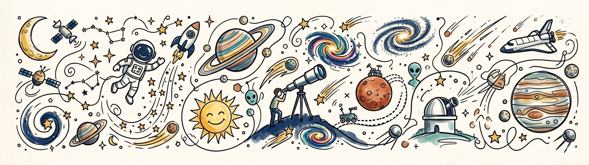

Tanuj Chauhan
Junior Research Fellow (PhD Scholar)
Department of Physics
Indian Institute of Technology, Delhi
Profile
Hello! I am currently a Junior Research Fellow (PhD Scholar) at the Department of Physics, Indian Institute of Technology, Delhi, working under the supervision of Prof. Vaibhav Pant. Driven by a broad interest in astrophysics, my current work focuses primarily on solar physics.
Prior to joining IIT Delhi, I completed my Masters in Physics at IIT Guwahati. With my strong background in programming, mathematical physics, and theoretical physics, my doctoral research focuses on the dynamics of the solar atmosphere, space weather, and magnetohydrodynamics. I am ready to devote myself completely to this purpose.
Recent Updates
- July 2026 Joined IIT Delhi as a Junior Research Fellow (PhD Scholar) under the supervision of Prof. Vaibhav Pant.
- 2026 Qualified JEST Physics with an AIR 83 and GATE Physics with AIR 94.
- 2025 Completed my Master's Dissertation investigating Magnetohydrodynamics in Accretion Flows under Prof. Santabrata Das. Graduated with an M.Sc. in Physics from IIT Guwahati.
- 2024 Conducted research on the Path Integral Formulation of Quantum Mechanics under Prof. Justin R. David at IISc Bangalore.
- 2023 Qualified IIT JAM Physics with AIR 258. Ranked 1st in Mathematics during B.Sc. III.